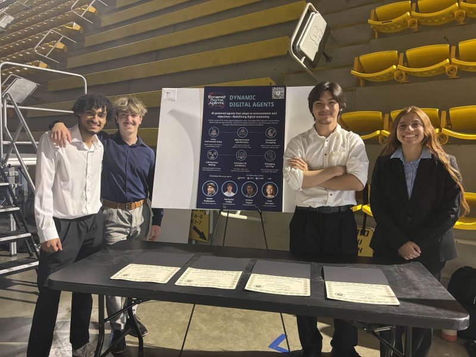

Project Demo
About the project
Generative Agents (a.k.a. Dynamic Digital Agents) is a multi-agent survival simulation built in Unity, where every agent observes the environment through image snapshots and contextual data, then queries its own large language model to make informed long-term decisions about how to survive.
The agents have to balance hunger, threats, and exploration in a stylized open world. Instead of hand-tuned heuristics, their behavior emerges from prompting an LLM with what they "see." On top of that, ML-Agents handles a reinforcement learning pass so the agents can learn faster by combining language-model priors with reward signals.
Built as a senior capstone with Hunter Ruebsamen (team leader), Carla Zuccarini, and Nathaniel Fedida. The project was awarded Best Use of AI at the California State University, Long Beach Senior Project Expo. The next step is packaging the system as a reusable Unity package so other developers can drop LLM-driven agents into their own scenes.
How it works
- Vision-grounded prompting. Each agent renders a snapshot of its surroundings each tick, packs it into a structured prompt (alongside hunger, position, recent actions), and asks its LLM what to do next.
- Behavior priors from the LLM. Outputs are parsed into discrete actions (move, eat, build, attack, flee). The LLM's commonsense gives the agent a head start on long-horizon plans no scripted policy would invent.
- RL fine-tuning via ML-Agents. A reinforcement loop trains an ONNX policy in parallel with the LLM, so the system can fall back to a fast inference model when latency matters.
- Configurable environments. Number of agents, food density, hostile creatures, day/night cycle, all driven from
configuration.yamland TensorBoard-monitored during training.
The team & the poster

On LinkedIn
Senior Project Expo · Poster Presentation
Read the full write-up on LinkedIn: team intro, the demo, and what we learned building LLM-powered agents in Unity.
View post on LinkedIn ↗